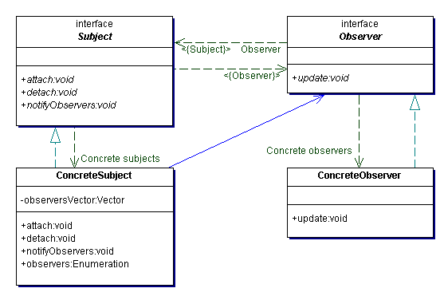

观察者模式定义了一个一对多的依赖关系，让一个或多个观察者对象监察一个主题对象。这样一个主题对象在状态上的变化能够通知所有的依赖于此对象的那些观察者对象，使这些观察者对象能够自动更新。
观察者（Observer）模式是对象的行为型模式，又叫做发表-订阅（Publish/Subscribe）模式、模型-视图（Model/View）模式、源-收听者（Source/Listener）模式或从属者（Dependents）模式。
类图结构

抽象主题
主题把所有的观察者对象引用保存到一个集合中，每个主题都可以有任何数量的观察者。主题提供一个增加、销毁观察者和通知所有观察者的方法。

抽象观察者
为所有具体的观察者定义一个接口，再得到通知更新自己。

具体主题
保存对具体观察者对象有用的内部状态；在这种内部状态改变时给其观察者发出一个通知；具体主题角色又叫作具体被观察者角色；
具体观察者
保存一个指向具体主题对象的引用；和一个与主题的状态相符的状态。具体观察者角色实现抽象观察者角色所要求的更新自己的接口，以便使本身的状态与主题的状态同步。
下面就使用java.util.Observable 和java.util.Observer 实现观察者模式
代码清单一：具体主题1
2
3
4
5
6
7
8
9
10
11
12
13
14package com.design.mode;
import java.util.Observable;
public class Subject extends Observable{
private String str;
public void add(String str){
this.str = str;
//设置change=true
setChanged();
//通知所有观察者主题有改变
notifyObservers(str);
//notifyObservers();
}
}
代码清单二：具体观察者1
2
3
4
5
6
7
8
9
10
11
12package com.design.mode;
import java.util.Observable;
import java.util.Observer;
public class SubjectObserver extends Observer{
public SubjectObserver(Observable 0){
o.addObserver(this);
}
public void update(Observable o,Object arg){
System.out.println(arg);
}
}
代码清单三：测试1
2
3
4
5
6
7
8
9
10
11package com.design.mode;
public class Test{
public static void main(String[] args){
//实例化主题
Subject sb = new Subject();
//实例化观察者
SubjectObserver so = new SubjectObserver(sb);
sb.add("hello world");
}
}
控制台输出1
hello world
总结
观察者设计模式降低了系统的耦合度被观察者角色所知道的只是一个具体观察者列表，每一个具体观察者都符合一个抽象观察者的接口。被观察者并不认识任何一个具体观察者，它只知道它们都有一个共同的接口。
由于被观察者和观察者没有紧密地耦合在一起，因此它们可以属于不同的抽象化层次。如果被观察者和观察者都被扔到一起，那么这个对象必然跨越抽象化和具体化层次。